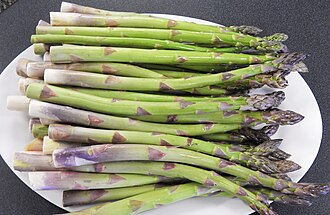

アスパラガスの生産量 都道府県ランキング
全18都道府県の順位と収穫量
アスパラガスの収穫量が全国で最も多いのは北海道で、2,760 tです。全国（2万2,300 t）の12%を占めます。

| 順位 | 都道府県 | 収穫量 | 全国に占める割合 |
|---|---|---|---|
| 1位 | 北海道 | 2,760 t | 12% |
| 2位 | 佐賀県 | 1,990 t | 8.9% |
| 3位 | 熊本県 | 1,900 t | 8.5% |
| 4位 | 栃木県 | 1,760 t | 7.9% |
| 5位 | 山形県 | 1,490 t | 6.7% |
| 6位 | 長野県 | 1,440 t | 6.5% |
| 7位 | 福岡県 | 1,420 t | 6.4% |
| 8位 | 福島県 | 1,390 t | 6.2% |
| 9位 | 長崎県 | 1,350 t | 6.1% |
| 10位 | 秋田県 | 1,060 t | 4.8% |
| 11位 | 香川県 | 851 t | 3.8% |
| 12位 | 新潟県 | 684 t | 3.1% |
| 13位 | 広島県 | 676 t | 3.0% |
| 14位 | 岩手県 | 460 t | 2.1% |
| 15位 | 青森県 | 372 t | 1.7% |
| 16位 | 愛媛県 | 353 t | 1.6% |
| 17位 | 島根県 | 297 t | 1.3% |
| 18位 | 岡山県 | 279 t | 1.3% |
アスパラガスの生産量の推移（令和2年産〜令和6年産）
全国の収穫量は、令和2年産の2万6,700 tから令和6年産の2万2,300 tへ、16%減りました。期間中、1位は一貫して北海道です。
| 年 | 全国 | 1位 | 2位 | 3位 |
|---|---|---|---|---|
| 令和6年産 | 2万2,300 t | 北海道2,760 t | 佐賀県1,990 t | 熊本県1,900 t |
| 令和5年産 | 2万4,600 t | 北海道3,510 t | 熊本県2,270 t | 佐賀県2,250 t |
| 令和4年産 | 2万6,000 t | 北海道3,500 t | 熊本県2,320 t | 佐賀県2,270 t |
| 令和3年産 | 2万5,200 t | 北海道2,930 t | 佐賀県2,520 t | 熊本県2,360 t |
| 令和2年産 | 2万6,700 t | 北海道3,810 t | 佐賀県2,430 t | 熊本県2,200 t |
この数字について
- 分類：キジカクシ科
- 全国の収穫量：2万2,300 t
- この数字が表すもの：収穫量（収穫された重量）
- 調査：作物統計調査 作況調査（野菜） 令和6年産
- 18県分を調査（調査していない県は順位に入りません）
アスパラガスの生産量について、よくある質問
- アスパラガスの生産量が日本一の都道府県はどこですか？
- 北海道です。作物統計調査 作況調査（野菜）（令和6年産）で2,760 tでした。
- アスパラガスの生産量ランキング2位・3位はどこですか？
- 2位は佐賀県（1,990 t）、3位は熊本県（1,900 t）です。
- アスパラガスの生産量ランキング4位・5位はどこですか？
- 4位は栃木県（1,760 t）、5位は山形県（1,490 t）です。アスパラガスの全18県の順位は上の表のとおりです。
- アスパラガスの全国の生産量はどれくらいですか？
- 2万2,300 t（令和6年産）です。